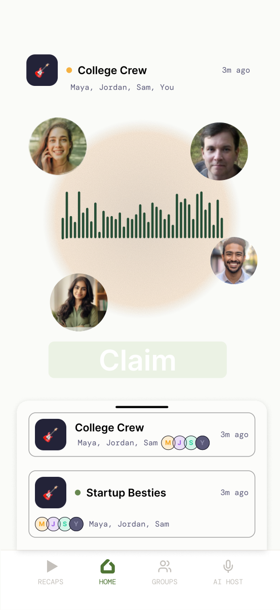
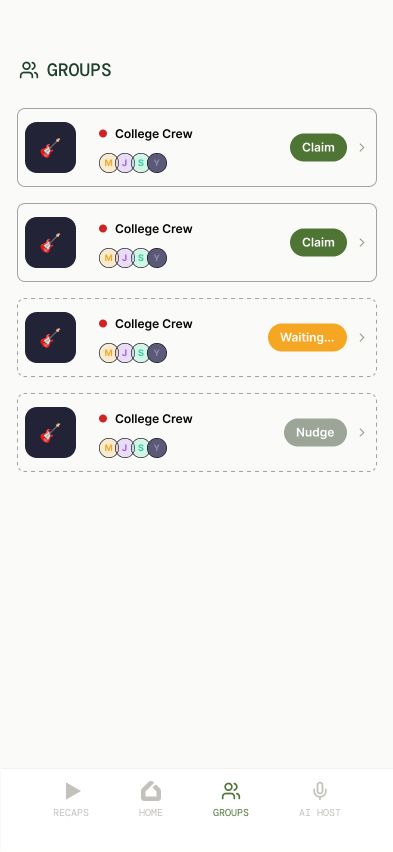

Pass the Mic
A voice-note relay for friend groups. Each group has one active clip. The first friend to claim it gets to listen and record the next one. At the end of the day, the whole chain plays back as a recap episode.
Group chats, but you have to earn the reply
Group chats are either silent or overwhelming. We wanted something in between, closer to a game of telephone. One person drops a voice note, everyone gets a nudge, and whoever claims it first listens and responds. Then the mic passes on.
Being first creates a small, fun rush, but it also creates a hard engineering problem. If two friends tap Claim at the same moment, exactly one of them has to win, every time, on every device.


Two taps, one winner
Below is a simulation of what happens in the database. Tap both phones, or hit Race! to tap them at the same instant. Then turn off the row lock to see the bug it prevents.
sender: 'Sam'
claimed_by: NULL
Why it works
Clients are never allowed to write claimed_by directly. They call a Postgres function, claim_message(), through Supabase RPC. Inside one transaction, it locks the thread row and then the message row, checks every rule, and only then writes the claim. A second transaction arriving a millisecond later blocks on the lock, and when it gets in, it sees the clip is taken and returns already_claimed with the winner's name. The loser's phone shows "Too slow" instantly through Supabase Realtime, with no refresh needed.
Storage row-level security backs this up. Even if someone skipped the app, they couldn't download a clip they hadn't claimed.
Rules that keep it fair
A pure "fastest finger wins" game rewards whoever is always on their phone. We added rules so the relay keeps moving through the group:
- No self-repliesYou can't claim your own clip.
- No ping-pongYou can't claim a reply to your own clip, so two people can't take over the thread.
- Claims expireIf the winner doesn't respond within 10 minutes, the clip opens up again.
- End-of-day recapWhen the day closes, everyone can hear the whole chain as an episode, react, comment, and save it.
Small surface, strong guarantees
- Expo + React Native + TypeScript with Expo Router for the iOS and Android app.
- Supabase for auth, Postgres, Realtime subscriptions, and private Storage for audio.
- Database functions as the API.
claim_message,create_response_message, andend_dayhold all the rules in one place. SQL migrations and SQL tests keep them honest. - Unit tests (Vitest) on claim decision logic, plus a scripted two-device race for the demo.
What I learned
The most important feature of this app is one users never see. Putting the rules in the database instead of the client made the app simpler, safer, and easier to test. It's the same instinct I'd bring to customer-facing engineering work: find the one guarantee the experience depends on, and make it impossible to break.